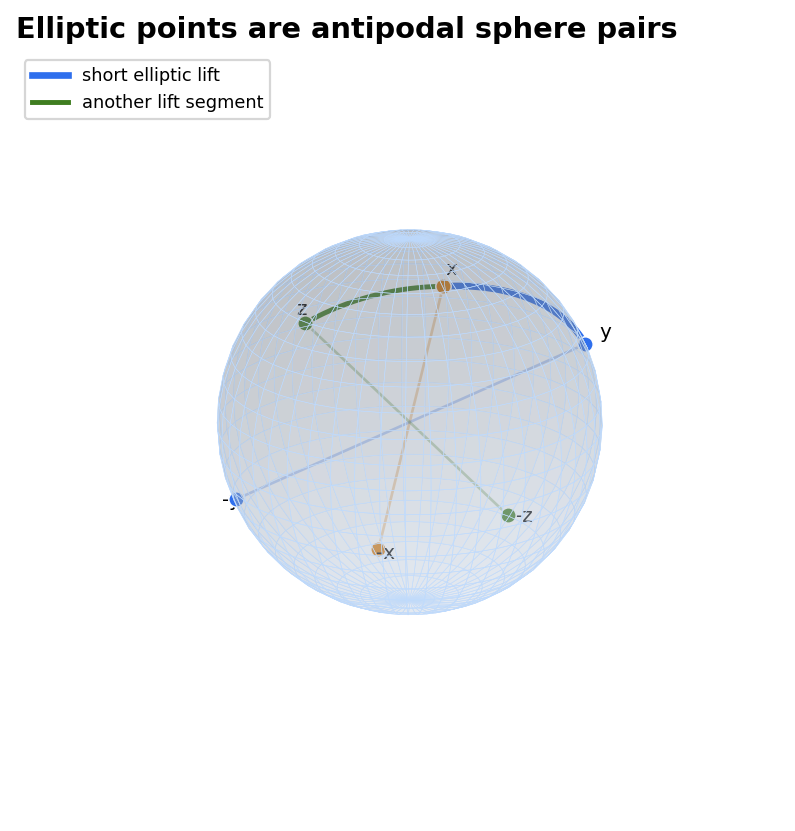
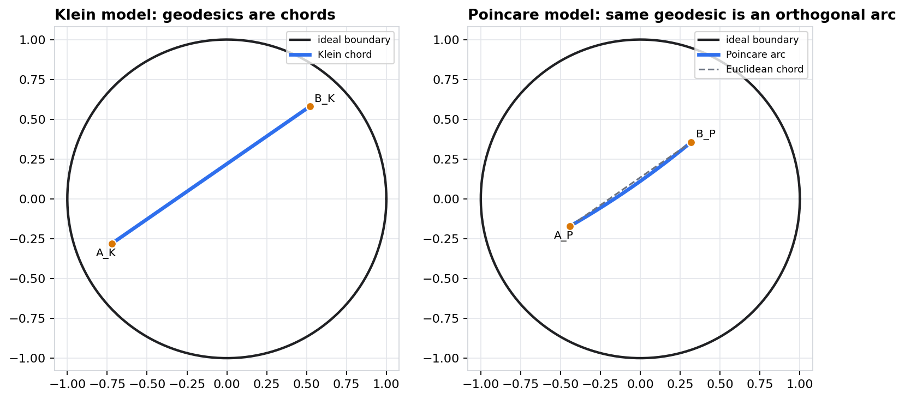
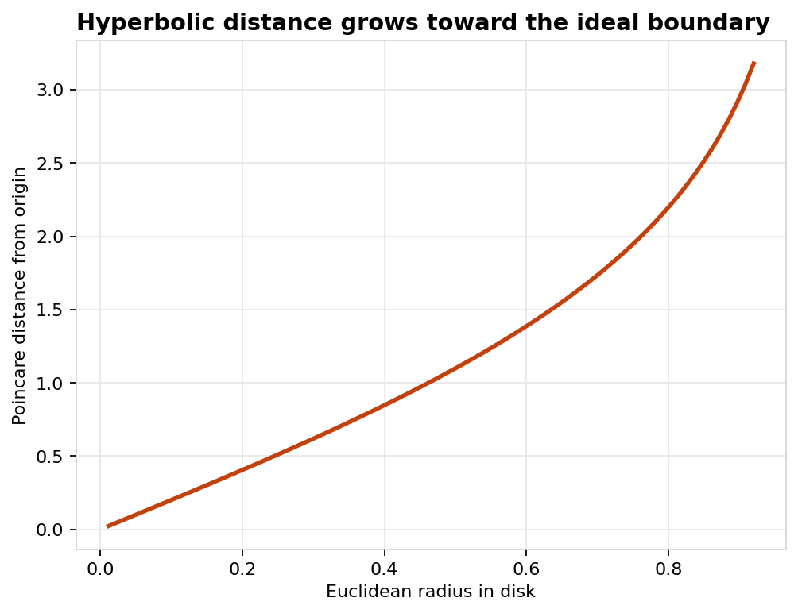
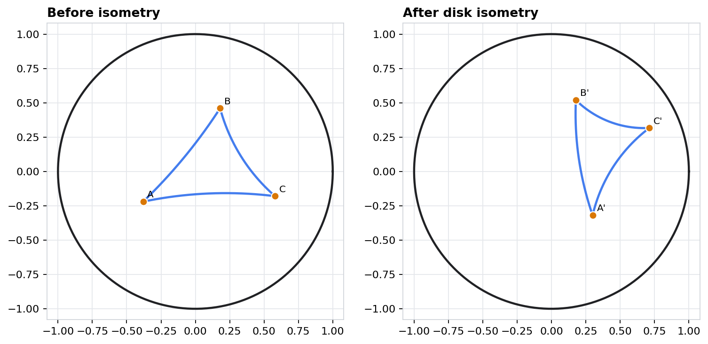
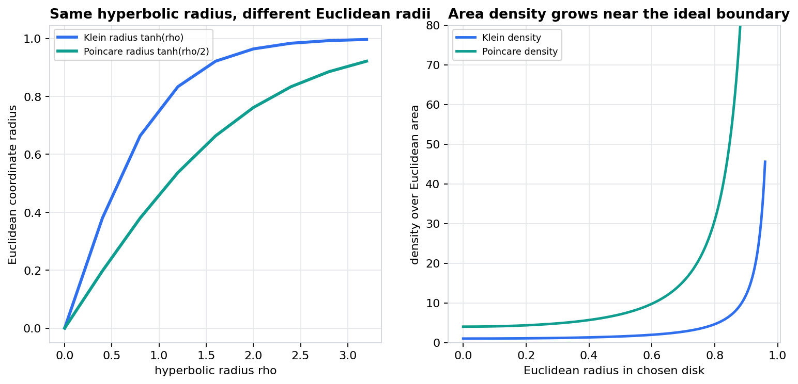

Geometry II - Chapter 19
Elliptic and Hyperbolic Geometry
How quotient spaces, projective balls, conformal disks, distance formulas, isometries, and measure separate intrinsic geometry from model artifacts.
Notebook: 19-elliptic-and-hyperbolic-geometry.ipynb
Source span: PDF pages 327-357
Manifest index 432
Geometry AtlasModel choice versus invariant content
Route Through The Chapter
Model
What It Makes Easy
Invariant Check
Elliptic quotient \(S^n/{\pm 1}\)
Antipodal ambiguity becomes explicit
\(d_E([x],[y])=\arccos |\langle x,y\rangle|\)
Klein ball
Projective geodesics are chords
Cross-ratio or Lorentz distance
Poincare disk
Angles and conformal geometry
Boundary-orthogonal arcs
Canonical measure
Area growth near ideal boundary
Same area after coordinate change
Lecture Question
When two pictures disagree about straightness, size, or area, which statement is geometry and which statement is the coordinate system?
Chapter scaffoldPDF pages 327-357
Elliptic Geometry: Quotient Before Picture
Definition: Elliptic Point
In dimension \(n\), an elliptic point is an antipodal pair on the unit sphere: \([x]=\{x,-x\}\subset S^n\).
$$d_E([x],[y])=\arccos |\langle x,y\rangle|,\qquad 0\le d_E\le \frac{\pi}{2}.$$
Notebook Check
The sample has \(d_E([x],[-x])=0\) while the spherical distance from \(x\) to \(-x\) is \(\pi\). The largest sampled elliptic distance is \(\pi/2\).

Elliptic quotientArtifact: elliptic-antipodal-quotient.png
Elliptic Lines And Isometries
Projective Reading
Elliptic \(n\)-space is real projective space \(\mathbf{P}^n(\mathbb{R})\) equipped with the metric inherited from the round sphere after antipodal identification.
Lines
An elliptic line is the image of a great circle, equivalently the projectivization of a two-dimensional linear subspace of \(\mathbb{R}^{n+1}\).
Isometries
Orthogonal transformations of \(\mathbb{R}^{n+1}\) descend to elliptic isometries; the maps \(A\) and \(-A\) define the same projective motion.
Elliptic modelSphere picture modulo antipodes
The Hyperbolic Projective Ball
Klein Model
Hyperbolic space appears as the interior of a projective quadric. In the ball model, geodesics are Euclidean chords whose endpoints lie on the ideal boundary.
$$\cosh d_K(u,v)=\frac{1-\langle u,v\rangle}{\sqrt{1-\lVert u\rVert^2}\sqrt{1-\lVert v\rVert^2}}.$$
- Projective straightness is visible.
- Euclidean angles are not trustworthy.
- Approaching \(\lVert u\rVert=1\) sends distance to infinity.
Distance Warning
The chapter notebook records a near-boundary sample distance of \(3.178\), even though the point still lies in a bounded Euclidean disk.
Hyperbolic projective modelChords are model-straight
Klein Chords, Poincare Arcs
Radial Coordinate Change
For a Poincare point \(P\) and its Klein image \(K\), the notebook uses
$$K=\frac{2P}{1+\lVert P\rVert^2},\qquad P=\frac{K}{1+\sqrt{1-\lVert K\rVert^2}}.$$
Invariant Diagnostics
Round-trip residual: \(1.24\cdot 10^{-16}\). Boundary-orthogonality residual for the Poincare arc: \(3.55\cdot 10^{-15}\).

Model changeArtifact: klein-poincare-geodesic-comparison.png
The Poincare Disk: Angles Are Honest
Metric Form
In the disk \(D=\{z:|z|<1\}\), the conformal metric is \(ds^2=4|dz|^2/(1-|z|^2)^2\). Thus Euclidean angles are preserved, but Euclidean lengths are rescaled.
$$d_P(z,w)=\operatorname{arcosh}\!\left(1+\frac{2|z-w|^2}{(1-|z|^2)(1-|w|^2)}\right).$$
Boundary Reading
Near \(|z|=1\), small Euclidean motion can represent large hyperbolic travel. The boundary is ideal, not a finite wall.

Poincare modelConformal, not Euclidean
Disk Isometries Preserve Hyperbolic Distance
Disk Automorphism
A typical orientation-preserving disk isometry has the form
$$z\longmapsto e^{i\theta}\frac{z-a}{1-\overline{a}z},\qquad |a|<1.$$
Pair
Before
After
AB
1.9376555168
1.9376555168
BC
1.8906499659
1.8906499659
CA
2.2124848432
2.2124848432
Residual
The maximum hyperbolic distance residual is \(4.44\cdot 10^{-16}\), while the maximum Euclidean side-length change is about \(0.203\).

Isometry testArtifact: poincare-disk-isometry-distance-invariance.png
What Each Model Makes Visible
Elliptic Quotient
- Best for sign invariance and finite diameter.
- Misleading if the two spherical lifts are counted as different points.
- Geodesics are great circles after quotienting.
Klein Ball
- Best for projective incidence and straight geodesics.
- Misleading for Euclidean angle and visual length.
- Boundary points are ideal endpoints, not part of the space.
Poincare Disk
- Best for conformal angles and disk automorphisms.
- Misleading for Euclidean area and radius.
- Geodesics are boundary-orthogonal circles or diameters.
Decision Rule
Choose the model that exposes the invariant you are proving, and name explicitly which Euclidean feature is only a drawing convention.
Model literacyDo not confuse representation with geometry
Measure And Area: Boundary Growth Is Real
Two Coordinate Densities
For the same hyperbolic plane, the Euclidean coordinate densities are
$$dA_K\propto (1-|K|^2)^{-3/2}\,dK,\qquad dA_P=4(1-|P|^2)^{-2}\,dP.$$
Area Of A Radius \(\rho\) Disk
The intrinsic formula \(A(\rho)=2\pi(\cosh \rho-1)\) gives \(A(3.2)\approx 70.916\), while the Euclidean disk remains bounded.
Interpretation
Large density near the boundary is not a rendering defect. It is the coordinate expression of infinite hyperbolic extent.

Canonical measureArtifact: hyperbolic-area-density-model-artifacts.png
Isometry Architecture Across Models
Elliptic
Orthogonal maps on \(\mathbb{R}^{n+1}\) act on projective classes:
$$[x]\longmapsto [Ax],\qquad A\in O(n+1),\quad A\sim -A.$$
Hyperbolic Projective
Projective transformations preserving the boundary quadric preserve the hyperbolic metric. In coordinates, this is the symmetry group of the defining quadratic form.
Disk Model
The same geometry appears as fractional-linear transformations that carry the unit disk to itself and preserve the Poincare distance.
Isometry groupsQuadratic forms and disk automorphisms
Worked Diagnostic: Change The Picture, Keep The Geometry
Four-Step Test
- Choose a model and two or three sample points.
- Compute the intrinsic distance or area formula.
- Apply a coordinate change or an isometry.
- Recompute the same invariant and compare residuals.
Chapter 19 Residuals
Klein to Poincare distance residual: \(0\). Disk isometry maximum distance residual: \(4.44\cdot 10^{-16}\). Hyperbolic area formula residuals stay below \(3.3\cdot 10^{-13}\).
Why This Counts As Evidence
The diagnostic never asks whether two Euclidean drawings look the same. It asks whether the mathematical quantity assigned by the model agrees after the permitted operation.
Operation
Quantity To Recheck
Antipodal replacement \(x\mapsto -x\)
Elliptic distance
Klein to Poincare map
Geodesic and distance
Disk automorphism
Pairwise hyperbolic lengths
Radius coordinate change
Area as a function of \(\rho\)
Proof habitCompute the invariant twice
Takeaways
Quotient Test
Elliptic geometry starts by identifying antipodal lifts, so formulas must be invariant under \(x\mapsto -x\).
Model-Change Test
Klein and Poincare disks describe the same hyperbolic plane but draw geodesics, radii, and areas differently.
Isometry Test
A valid isometry can move every Euclidean coordinate while preserving the hyperbolic distance data.
Measure Test
Boundary density growth records infinite hyperbolic extent inside a bounded Euclidean picture.
Chapter 19 recapElliptic and hyperbolic geometry